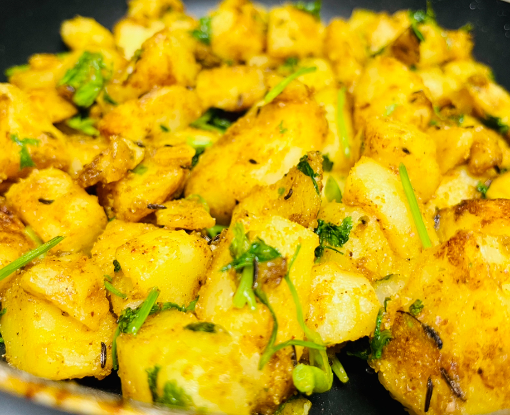

Jeera-Aloo Recipe

Description
Jeera-aloo is a vegetarian Indian dish and one of my favourites. Jeera and aloo are Hindi name for cumin spice and potato, respectively. It is very easy to cook and usually served as side dish. I like to eat it with yogurt.
Ingredients
- potatoes
- cumin seeds
- turmeric powder
- red chilli powder
- hing
- ginger
- salt
- coriander leaves
- oil or ghee
Steps
- boil potatoes to make them soft
- In a hot pan, add ghee
- when ghee is hot, add cumin seeds
- After cumin seeds start to splatter, add ginger and saute for a minute
- add all the reminaing spices---hing, turmeric powder, and red chilli powder
- cook for a few minutes
- sprinkle coriander leaves
- sprinkle lemon juice if you prefer